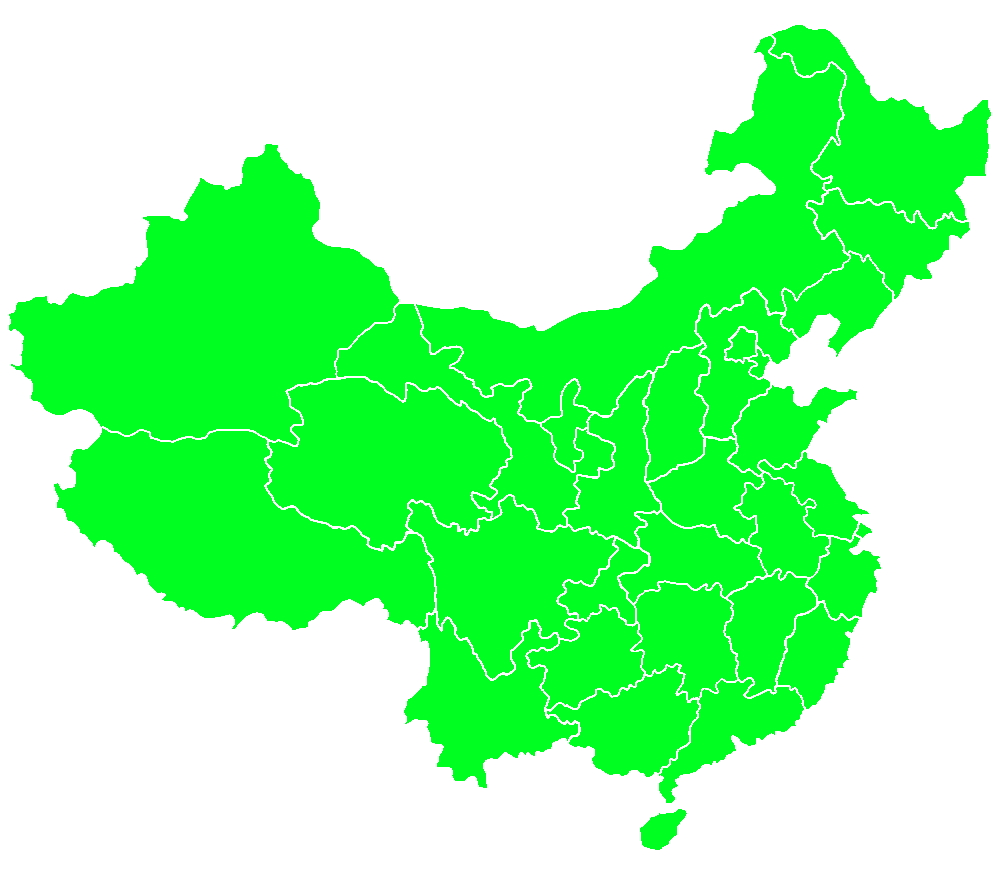
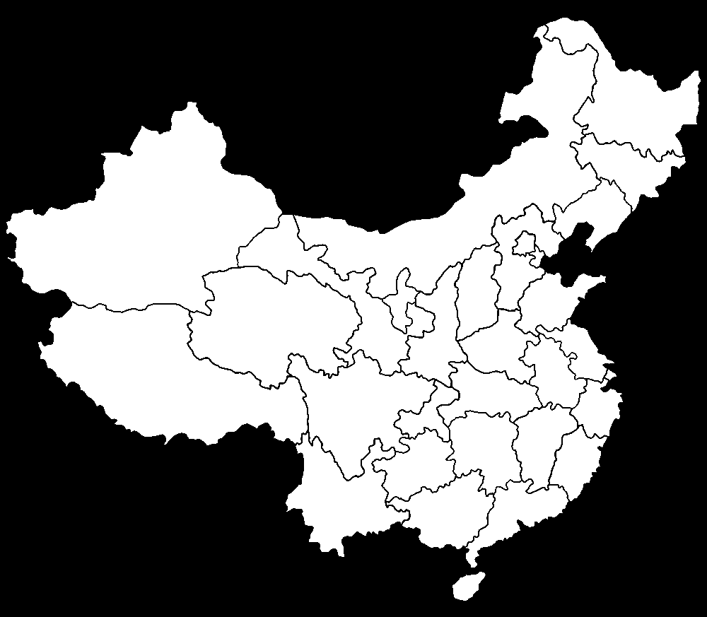
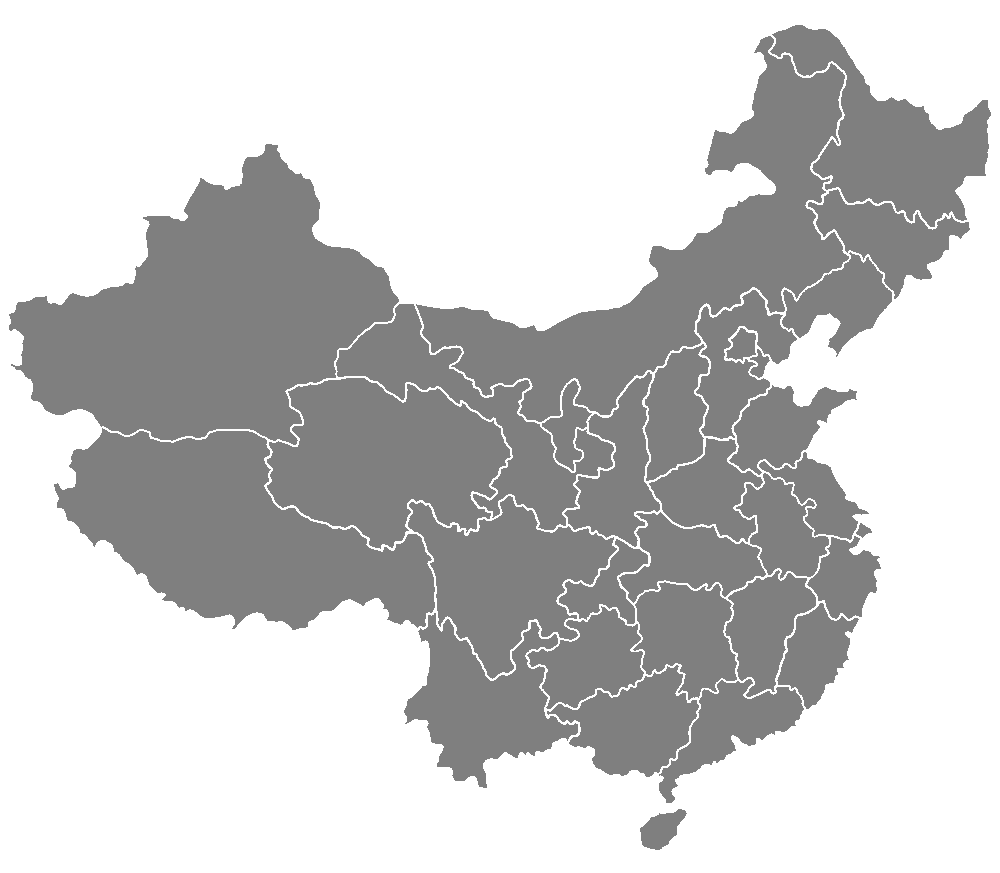

点与多边形测试(Point-in-Polygon Test)
我们有了轮廓，或，我们使用了一些点围出一个范围。现在我们有了一个新的点，我们想要计算这个点是否在范围当中。这时我们就能使用“点与多边形测试”。
double pointPolygonTest(InputArray contour, Point2f pt, bool measureDist)
该函数计算该点是在轮廓内围，外围还是在边缘上(或与顶点重合)。它分别返回正(内围)，负(外围)或零(边缘)值。当measureDist = false时，返回值分别为+1，-1或0。否则true，则返回值是该点与最近的轮廓边之间的有符号距离。
参数
contour —— 输入轮廓。 pt —— 需测试的点。 measureDist —— 如果为true，则该函数估计从点到最近的轮廓边的有符号距离。否则，该功能仅检查该点是否在轮廓内。
返回
double
示范
我们使用这张图为例：这个图像会比较简单，我们先导入图像，然后以灰度图格式进行阈值二进制化图像，再检测轮廓。
#include <opencv2/opencv.hpp>
#include <vector>
using namespace cv;
using namespace std;
Mat gray;
vector<vector<Point> > contours;
void onMouseHandle(int, int, int, int, void*);
int main() {
gray = imread("contour-map.jpg", 0);
threshold(gray, gray, 180, 255, THRESH_BINARY_INV);
...
白色的形状都明显看得出了，我们就可以检测这些轮廓。
...
// 检测轮廓
findContours(gray, contours, RETR_EXTERNAL, CHAIN_APPROX_SIMPLE);
// 显示所有轮廓
Mat canvas(gray.size(), CV_8UC3, Scalar::all(255)); // 创建空Mat
drawContours(canvas, contours, -1, Scalar::all(127), -1);
...
我们设置鼠标操作函数。获取鼠标坐标，我们与其和所有轮廓进行点与多边形测试，在范围内的轮廓我们以红色绘之。
...
// 设置鼠标操作回调函数
namedWindow("window");
setMouseCallback("window", onMouseHandle);
// 等待键盘输入退出
imshow("window", canvas);
waitKey(0);
destroyAllWindows();
return 0;
}
void onMouseHandle(int event, int x, int y, int flags, void* param) {
// 新Mat
Mat canvas(gray.size(), CV_8UC3, Scalar::all(255));
if (event == CV_EVENT_MOUSEMOVE) { //鼠标移动消息
for (int i=0; i<contours.size(); ++i) {
// 点与多变形测试
double distance = pointPolygonTest(contours[i], Point(x, y), true);
// 在轮廓内
if (distance >= 0) {
drawContours(canvas, contours, i, Scalar(0,0,200), -1);
// 不在轮廓内
} else {
drawContours(canvas, contours, i, Scalar::all(127), -1);
}
}
imshow("window", canvas);
}
}
结果如下：